Current
NUS Immersive Reality Lab — AI social companions for eldercare robotics
Robotics Software & Embodied AI
Building software-first robotics — ROS architecture, perception models, RL, and human–robot interaction.
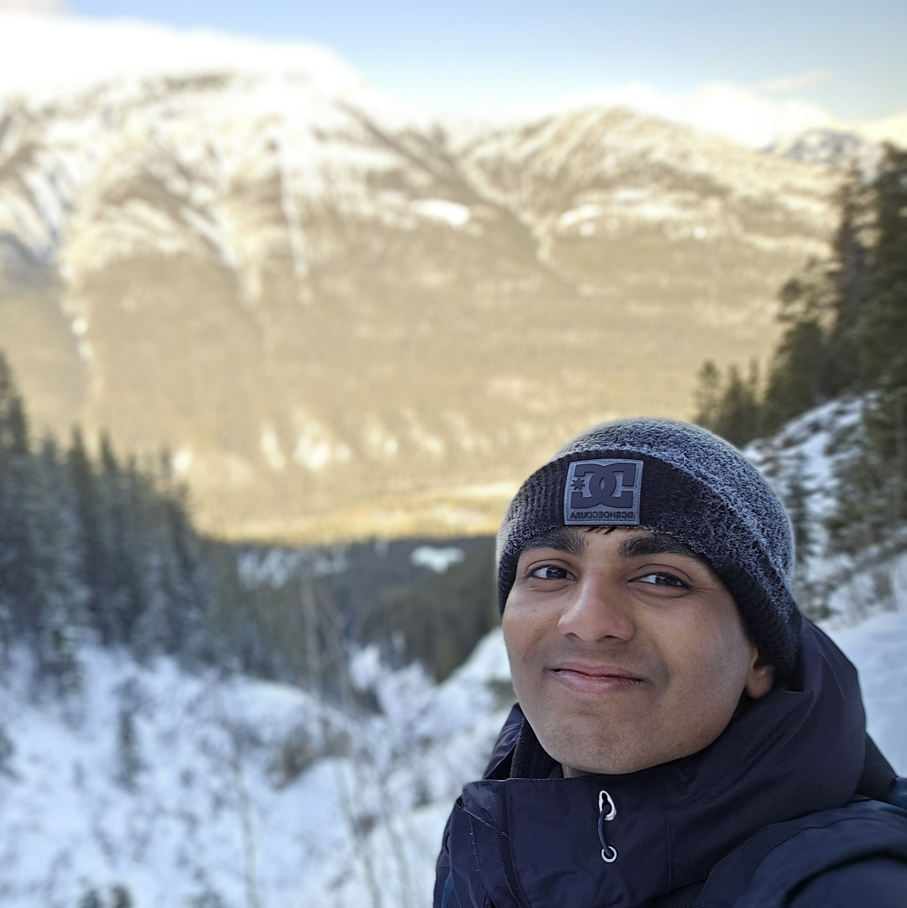
Most Relevant Work
Semi-autonomous boxing coach — closed-loop perception, actuation, and AI feedback.
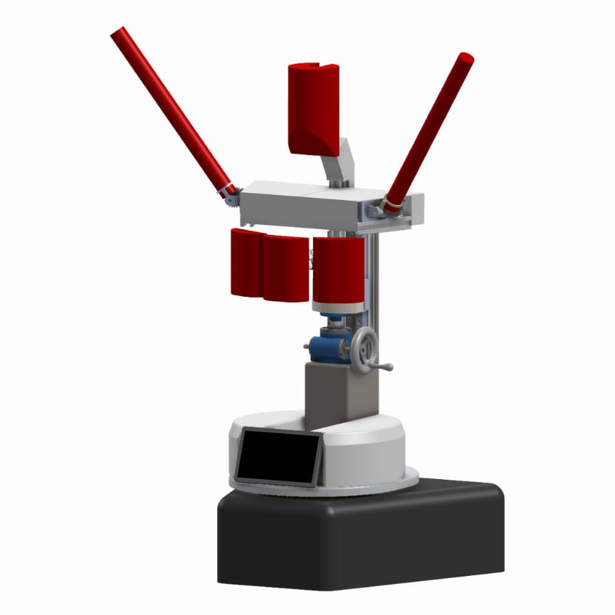
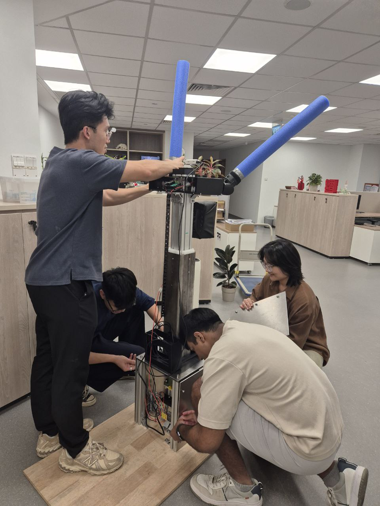
Camera-to-SLAM localization pipeline for socially aware robot gaze at Expo scale.
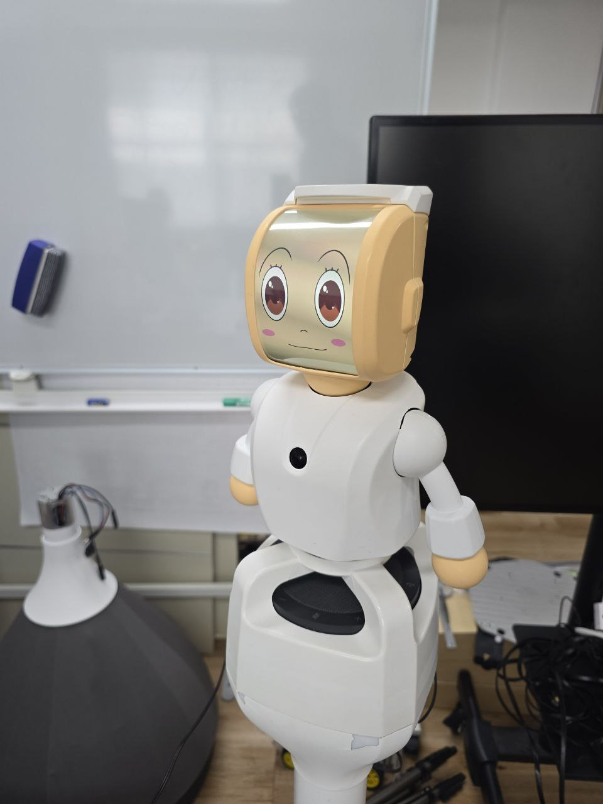
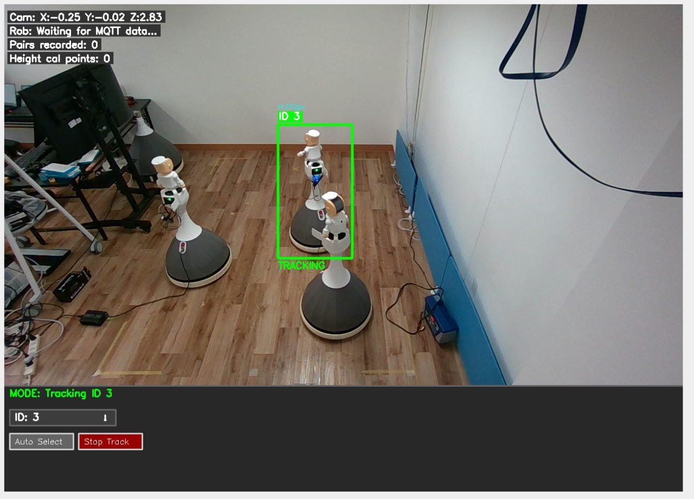
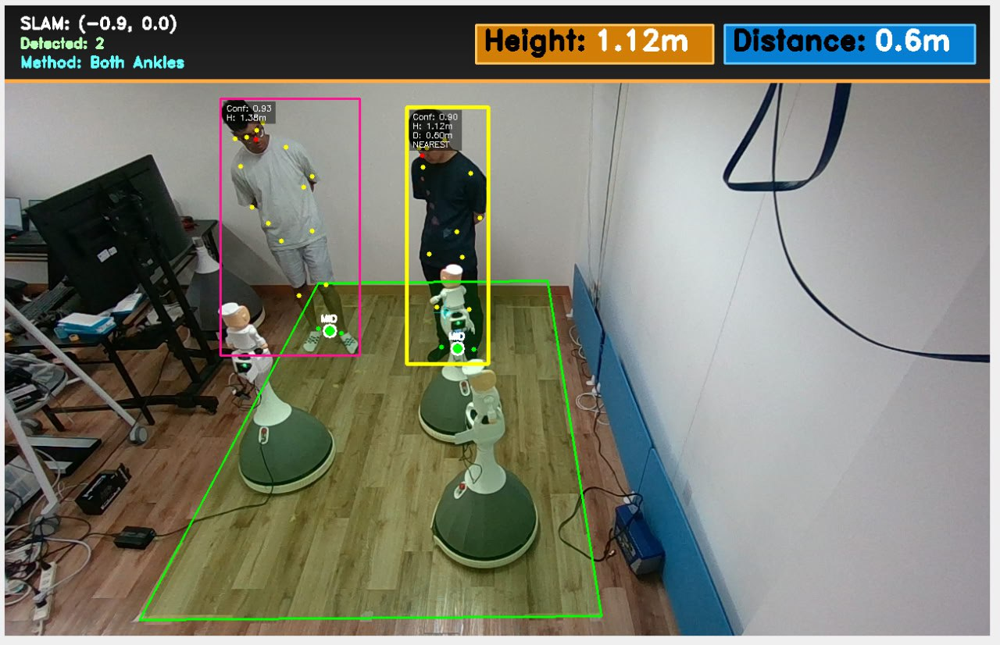
Porting a dexterous manipulation RL pipeline from Adroit to Inspire hand in simulation.
Foundational Track
NUS Innovation & Design Programme — my entry point into robotics. Three chassis iterations evolved from a first prototype into a full balancing system with gimbal stabilization and structural analysis.
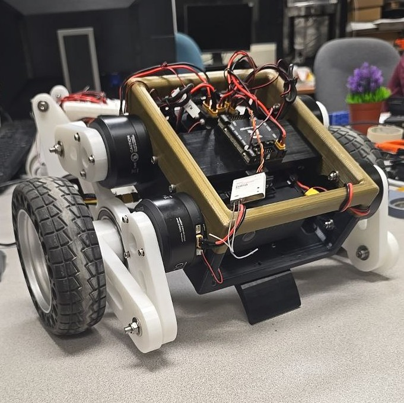
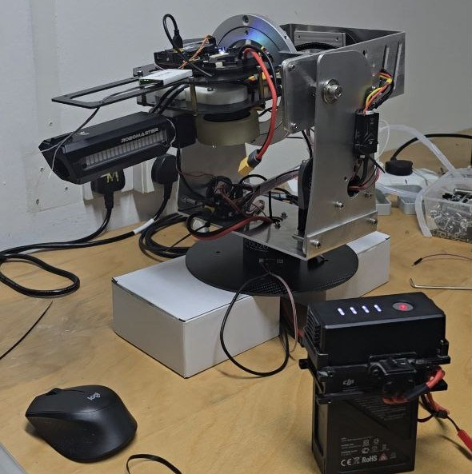

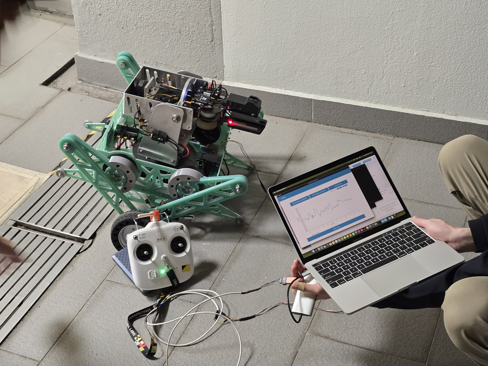
Visual Communication
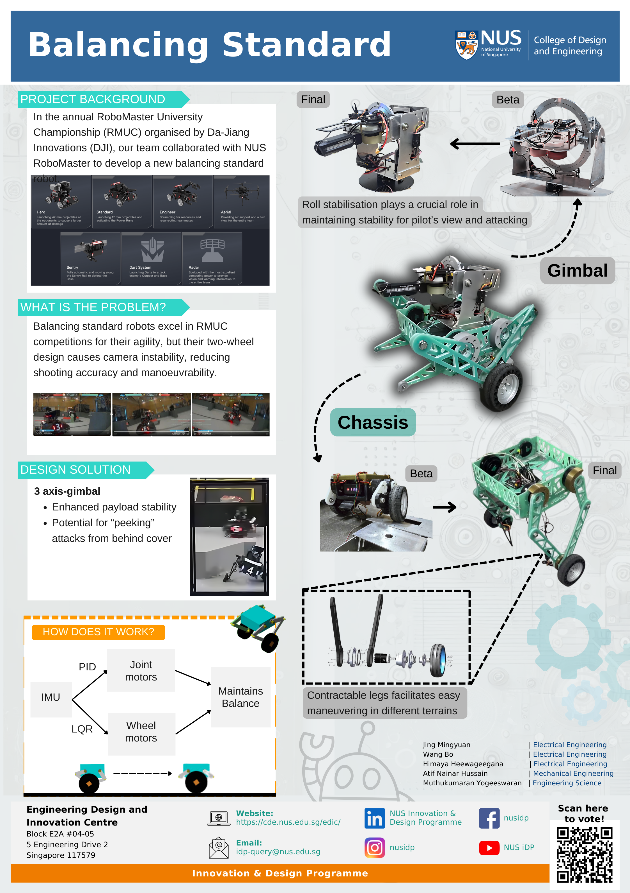
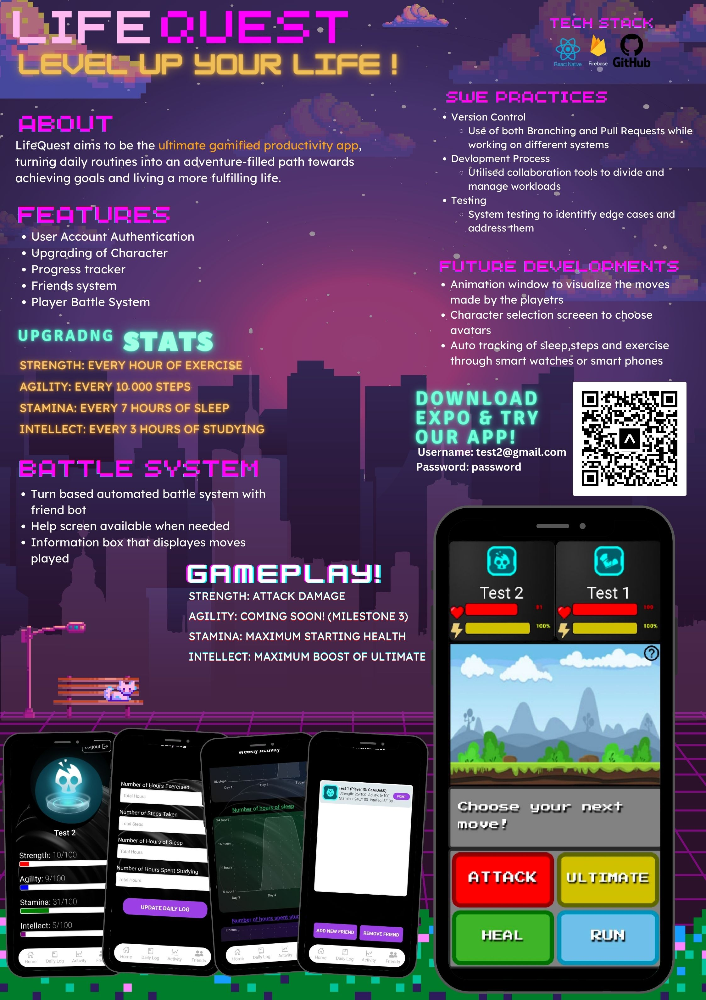
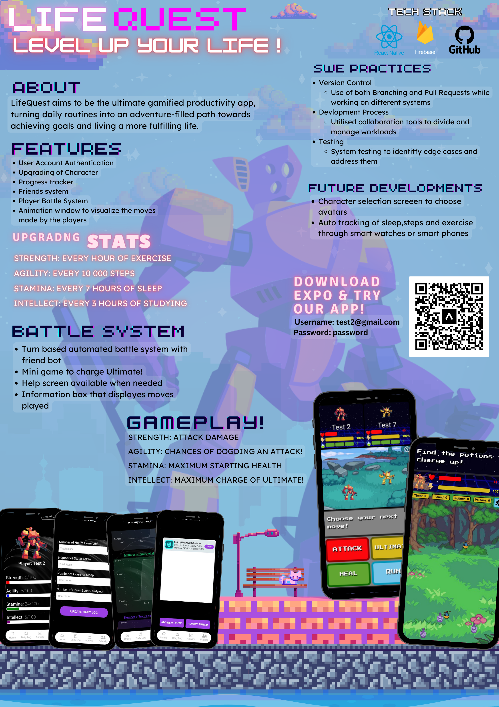
Professional Journey
ROS2 · SLAM · Perception · Mobile Robotics · STM32
CV · Neural Nets · Action Recognition · RL
MuJoCo · COMSOL · SolidWorks · PID/LQR
Python · C++ · C · MATLAB · JS · Docker · Git
Other Work
Let's Connect
Email: yogeeswaran@u.nus.edu · LinkedIn: yogee-s · GitHub: Yogee-s